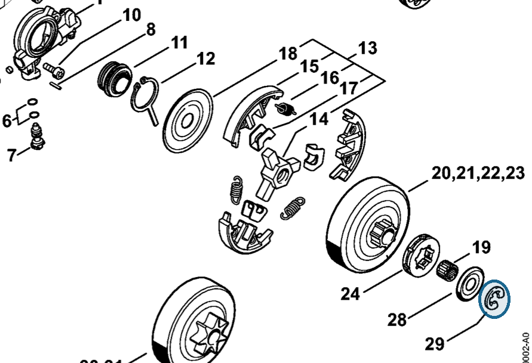
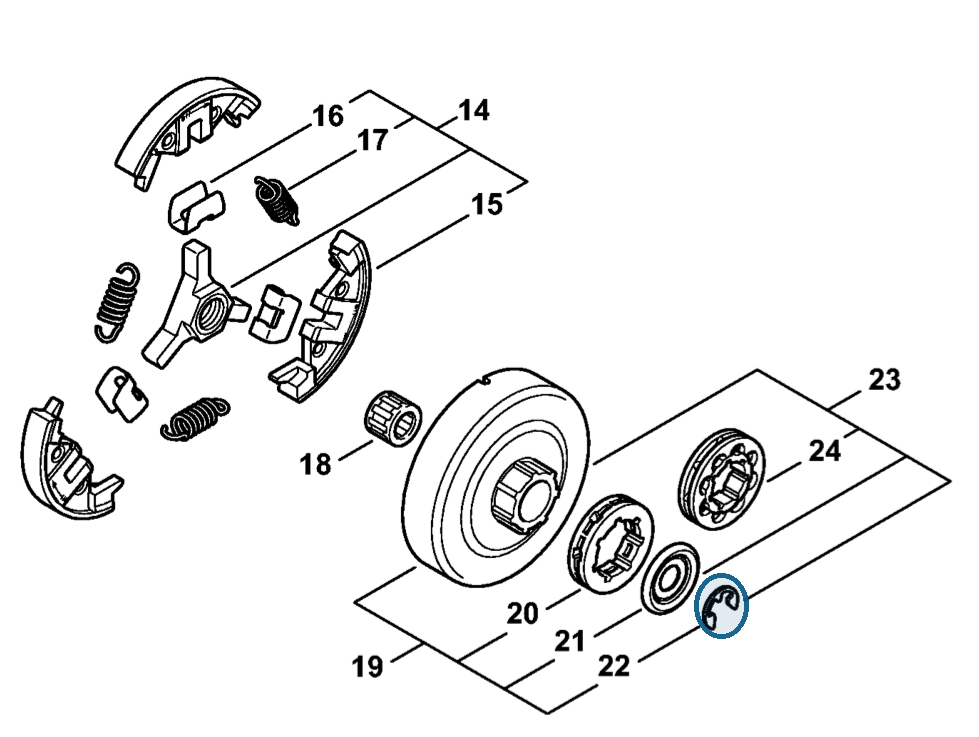

E-clip 8x1.3
9460 624 0801
MS 261 — clutch drum
Retains washer 0000 958 1022. Included in rim sprocket kit 1141 007 1002.
Item 29 Qty listed: 1

MS 261 C-M spare-parts list, 10/02/2023. Drawing p. 10; parts table p. 12.
MS 462 — clutch drum
Retains washer 0000 958 1032. Included in rim sprocket kit 1128 007 1001.
Item 22 Qty listed: 1

MS 462 C-M Z spare-parts list, 10/29/2024. Drawing p. 13; parts table p. 14.